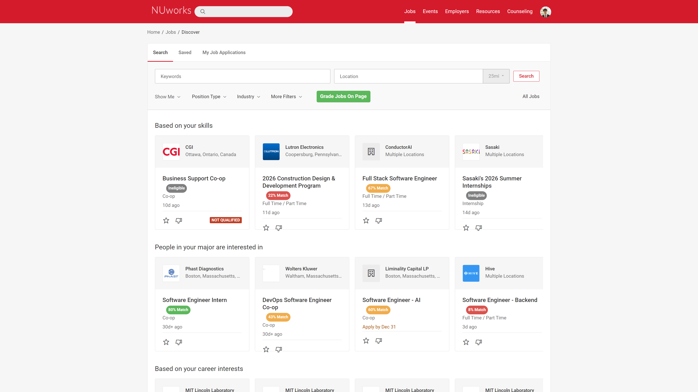

NUWorks Grader reads every posting the way you would — then scores it against your skills, flags the ones you're not eligible for, and saves the strong matches. All in your browser, all private.

NUWorks lists more jobs than anyone can read. The extension does the reading, so you spend your time on the ones worth applying to.
Upload your resume once. Every posting is scored against the skills it finds.
Analysis runs entirely in your browser. No servers, no accounts, no tracking.
See which of your skills matched — and which ones each job is missing.
Graduation dates and class-year requirements are read for you, before you apply.
Narrow by match score, freshness, company, or title across every posting at once.
Favorite every strong match at once, or clean up your saved list just as fast.
No account. No configuration. Install, upload, analyze.
Add it from the Chrome Web Store. It only asks for NUWorks page permissions.
Paste text or drop in a PDF. Skills are extracted locally in milliseconds.
Open NUWorks and hit Analyze. Scores and badges appear right on the page.
Built by a Northeastern student, for Northeastern students. Free, open source, and private.
Add to Chrome — it's free